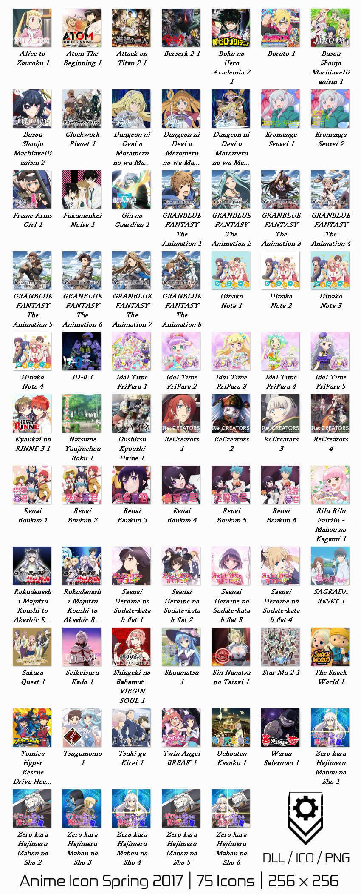

Yusatsu Nao's Blog
Tuesday, May 2, 2017
Anime Icon Spring 2017 Released
Posted by Yusatsu Nao
Hello again guys, what a nice day. Wait, not nice for me, still busy taking care of my real life. well, forget it. Today, I post Anime Icon for this season, spring 2017. Sorry I'm late posting this because I'm REALLY BUSY. And now, let's start it, like the last anime icon post, I'm only create Icon for windows not for Mac, I don't have enought material for that. You can check the list of Anime and icon below.Here is the list of the anime that I create the Windows Icon.
- Alice to Zouroku
- ATOM : THE BEGINNING
- Attack on Titan Season 2
- BERSERK 2
- Boku no Hero Academia 2
- BORUTO : NARUTO NEXT GENERATIONS
- Busou Shoujo Machiavellianism
- CLOCKWORK PLANET
- Dungeon ni Deai o Motomeru no wa Machigatteiru Darou ka Gaiden : Sword Oratoria
- Eromanga Sensei
- FRAME ARMS GIRL
- Fukumenkei Noise
- Gin no Guardian
- GRANBLUE FANTASY The Animation
- Hinako Note
- ID-0
- Idol Time PriPara
- Kyoukai no RINNE 3
- Natsume Yuujinchou Roku
- Oushitsu Kyoushi Haine
- Re:CREATORS
- Renai Boukun
- Rilu Rilu Fairilu : Mahou no Kagami
- Rokudenashi Majutsu Koushi to Kinki Kyouten
- Saenai Heroine no Sodatekata ♭
- SAGRADA RESET
- SAKURA QUEST
- Seikaisuru Kado
- Shingeki no Bahamut : VIRGIN SOUL
- Shuumatsu Nani Shitemasu ka? Isogashii desu ka? Sukutte Moratte Ii desu ka?
- sin Nanatsu no Taizai
- Star Mu 2
- The Snack World
- Tomica Hyper Rescue Drive Head Kidou Kyuukyuu Keisatsu
- Tsugumomo
- Tsuki ga Kirei
- Twin Angel BREAK
- Uchouten Kazoku 2
- Warau Salesman NEW
- Zero kara Hajimeru Mahou no Sho
TV version or BD, it's same. IF I have a lot of time, maybe I will make some old Anime Icon, OVA, Movie Icon and etc. All the list above based on Anichart's list but not all I make the Icon because it's hard to find the material, it's hard because the anime not popular maybe. And below is the screenshot of the Anime Icon.

I'm upload DLL, ICO and PNG files you can check the link below.
DOWNLOAD | PASSWORD
Copyright © 2016 Yusatsu Nao
All images are copyright to their respective owners.
That's it, if you have a question, suggestion or request please tell it to me through Google Forms on About Page. And don't forget to follow my Facebook page, Twitter, and LINE@Account okay. See you next time and have a great day guys.